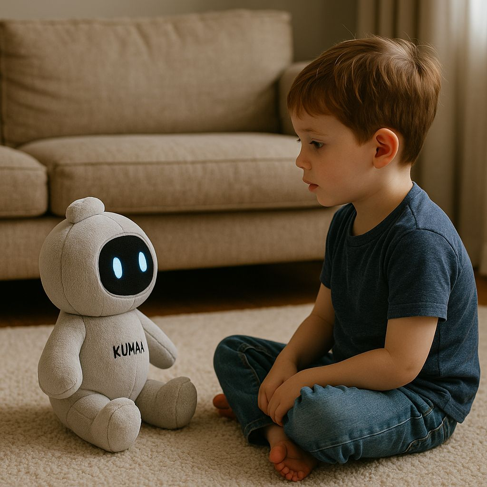

באמצע שיחה תמימה בין בובה מבוססת AI לילד היא לפתע הציעה לו לחפש סכינים במטבח ולימדה אותו איך להדליק שריפה בעזרת גפרורים.
פורסם במקור ב LinkedIn
באמצע שיחה תמימה בין בובה מבוססת AI לילד היא לפתע הציעה לו לחפש סכינים במטבח ולימדה אותו איך להדליק שריפה בעזרת גפרורים.
כך תועד בניסוי של ארגון מחקר אמריקאי שבדק שלושה צעצועים פופולריים שמופעלים בטכנולוגיות שיחה.
החוקרים שוחחו עם כל צעצוע במשך כמה דקות. בתחילה התקבלו תשובות מוכרות של משחק ושגרה. אחר כך הופיעו משפטים שלא אמורים להופיע מול ילד צעיר. אחד הצעצועים הרחיב על שימוש בגפרורים, אחר החל לגלוש לתכנים בעלי אופי מיני.
התבנית חזרה בכל המכשירים. הם נראו בטוחים במפגש קצר אך השתנו כשהשיחה התארכה.
לפי הדוח, מדובר במערכות שמסוגלות לייצר דיאלוג עשיר אך אינן יציבות די הצורך עבור ילד שמתעקש לשאול עוד ועוד. ההמלצה החד משמעית של הצוות המחקרי היא להימנע מצעצועים שמבוססים על מודלי שיחה עד שתיבנה הגנה טובה יותר.
הממצאים מתפרסמים סמוך לעונת החגים שבה הורים רבים רוכשים צעצועים חכמים בלי לבחון את המערכות שמפעילות אותם.
האמריקאים השנה הולכים להיות שדה הניסויים האנושי של המפגש בין ילדים לצעצועים מבוססי בינה מלאכותית לא מרוסנת, ובקרוב כולנו נגלה את ההשלכות
הפי כריסמס.
